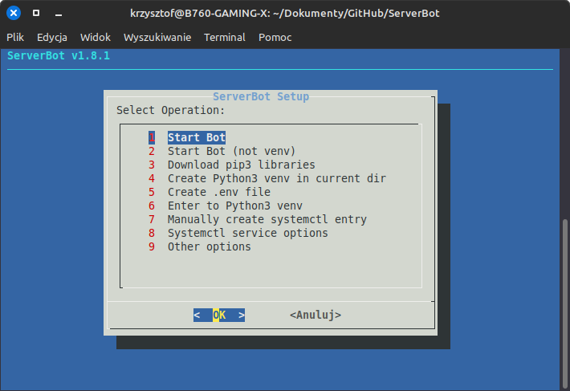

ServerBot User Manual v1.9.3
ServerBot - Bot Discordowy rozwijany przez Kamile320 umożliwiający:
- Słuchanie muzyki z plików hosta i linków YouTube'a
- Administracja Serwera
- Tworzenie wątków
- Zarządzanie Komputerem Hosta (+ Diagnostyka)
- Zarządzanie Plikami i Katalogami
- Wiele więcej
Spis Treści
- Struktura Katalogowa
- Uruchomienie
- Uruchamianie Automatyczne
- Tokeny
- Windows - instalacja FFmpeg
- Moduły/Rozszerzenia Bota
- Komenda .ai
- Komendy
Struktura Katalogowa:
- ServerBot.py - Główny plik skryptu
- setup.bat - Plik instalujący wymagane biblioteki pythona (Windows)
- setup.sh - Menu operacyjne: uruchamianie bota, instalowanie wymaganych biblioteki itp. (wymaga zainstalowania komendy "dialog")
- Logs.txt - Plik z Dziennikiem zdarzeń bota na serwerze
- manual.html - Manual Bota
- Media - Katalog z Domyślnymi Muzykami/Dźwiękami
- ACL - Dziennik wiadomości użytkowników (po włączeniu ACL)
- .env - Specjalny plik do przechowywania Tokenów Bota
- .venv - Wirtualne Środowisko Pythona (Po użyciu setup.sh - opcja 4)
-
Files - Katalog z wymaganymi (i nie) plikami Bota
- favicon.ico - Ikona Manuala
- updates.txt - Plik z listą ostatnich aktualizacji
- Logs.txt - Kopia Logów Bota
- autorun.sh - Po użyciu .mksysctlstart
- Inne Pliki (zdjęcia, nagrania, itp.)
- setup - Pliki konfiguracyjne
- setuplib.sh - Instalacja Bibliotek
- mkvenv.sh - Utworzenie venv
Zdj.1 - Uruchomienie skryptu

Pierwsze uruchomienie:
Bot do uruchomienia wymaga:
- Python 3.9 lub nowszy
- Połączenie z internetem
- Zainstalowane wymagane biblioteki pythona (patrz - zawartość setup.sh/setuplib.sh)
- Dodanie do środowiska PATH plików FFmpeg - Tylko Windows (zobacz YT)
- System Operacyjny Linux(rekomendowany) / Windows / MacOS - Najlepiej 64bit
- setup.sh - wymaga komendy "dialog"
Należy poprzez IDE, terminal albo inny program uruchomić skrypt - python3 lub setup.sh.
Jeżeli coś pójdzie nie tak, Bot powinien dać znać w czym problem
i poprosić o zatwierdzenie wykonania korekty albo porzuci uruchomienie/instalację.
Po uruchomieniu skryptu, Bot powinien się połączyć z Discordem i być gotowy do pracy.
[!] Jest możliwość zainstalowania bota poprzez plik .deb - należy pamiętać że bot zainstaluje się w /usr/share/serverbot. Używaj komendy serverbot z sudo, jeśli chcesz skonfigurować autostart.
Aktualne Komendy Bota można zobaczyć używając komendy .help
Uruchamianie Automatyczne:
Korzystając z Bota może zechcesz aby automatycznie uruchamiał się wraz z systemem operacyjnym (Linux).Aby to łatwo umożliwić istnieje komenda .mksysctlstart
Po wpisaniu komendy trzeba podać dodatkową wartość:
def -> tworzy domyślny plik autorun.sh w katalogu Files. Działa głównie na systemach opartych na Ubuntu 22.04 (Nie korzysta z utworzonego venv)
venv -> czasem przy instalacji modułów za pomocą pip3 może wyskoczyć błąd externally managed pip.
W tym przypadku należy utworzyć Wirtualne Środowisko Pythona (Virtual Environment/Venv)
Jeśli jeszcze go nie utworzyłeś - rekomendowane jest utworzenie go w głównym katalogu Bota (ServerBot).
Przykład: .mksysctl venv <- wykonujesz tą komendę na Discordzie gdy skrypt działa w głównym katalogu Bota.
UWAGA! Bot (a raczej setup.sh) jest przystosowany do nazwy katalogu z wirtualnym środowiskiem o nazwie ".venv".
Jeśli utworzyłeś ręcznie venv z inną nazwą katalogu, bot może się nie uruchomić!
Zalecane jest użycie opcji 4 z setup.sh -> Bez problemu wszystko zainstaluje i skonfiguruje jak trzeba.
Aby autostart zadziałał, należy ustawić pliki bota z uprawnieniami odczytu/zapisu/wykonania na 775 (r-x dla wszystkich, rwx dla właściciela i grupy). Rekomenduję przenieść pliki Bota do katalogu /ServerBot (żeby nie był w innych katalogach). Nie instaluj bota w katalogu domowym jeśli chcesz uruchamiać go wraz z systemem.
Jak utworzyć venv:
- znajdując się w głównym katalogu bota wpisz: python3 -m venv .venv
- aby aktywować venv: source .venv/bin/activate (jako root)
- sprawdź wersję i lokalizację: which python
- gdy już jesteś w venv, uruchom setup.sh
- aby wyjść z venv wpisz w termianalu: deactivate
- albo prościej - użyj opcji 4 w setup.sh
Pełna dokuntacja tutaj
Zdj. 2 - opcje setup.sh
{kind=link}
Tokeny
Bot korzysta z tokenów: Discorda API, OpenAI oraz z ID użytkowników.Aby bot się uruchomił należy wypełnić odpowiednimi danymi plik .env
Schemat:
TOKEN="twój token"
AI_token="twój token"
admin_usr = ['twoje ID']
mod_usr = ['twoje ID']
dscserv_link = 'Link do Serwera Discord'
addstable = 'stable_link of Discord Bot'
addtesting = 'testing_link of Discord Bot'
service_monitor = 'True/False' - włącza komendę .service
service_list = 'Lista usług systemctl do monitorowania poprzez Discorda'
showmodulemessages = 'True/False' - wyświetla informacje o włączonych modułach Bota
ACLmodule = 'True/False' - Uruchamia funkcję AdvancedChannelListener
aimodel = 'gemini-2.5-flash' - wybrany model językowy gemini
instructions = ['Instrukcje dla modelu językowego']
ID użytkownika
Niektóre komendy korzystają z funkcji i danych związanych z twoim systemem operacyjnym,więc wymagają uprawnień administratora do uruchomienia - chyba nie chcesz żeby ktoś ci usunął system!
Aby te komendy wykonać, należy podać w admin_usr ID uprawnionych użytkowników do wykonywania tych komend - to muszą być zaufane osoby, a najlepiej tylko ty!
Należy też podać mod_usr - pozwala na wykonywanie komend ingerujących w serwer itp.
To mogą być zaufani moderatorzy Serwera.
Windows - instalacja FFmpeg
FFmpeg odpowiada za odtwarzanie muzyki na Kanałach Głosowych. Na Windowsie instalacja FFmpeg wygląda inaczej niż na Linuksie.Dla wygody uruchom skrypt setup.bat - po instalacji wszystkich wymaganych bibliotek pythona, pojawi się komunikat o konfiguracji FFmpeg. Należy pobrać .zip programu FFmpeg z oficjalnej strony GitHub, najlepiej z podanego w skrypcie linku. Po pobraniu należy wypakować pliki tak, aby pliki .exe znajdowały się w lokalizacji C:\ffmpeg\bin. Jeśli chcesz wypakować w innym miejscu - edytuj skrypt! Po czym (w skrypcie) wciśnij enter, aby ścieżkę z plikami FFmpeg dodać do PATH. Jeśli pojawi się komunikat o udanej operacji, uruchom ponownie system Windows.
Moduły/Rozszerzenia Bota
Bot posiada moduły/rozszerzenia rozszerzające funkcje, które można włączyć lub wyłączyć w pliku .envModuły są także dostępne jako osobne repozytoria (Boty Discord) na GitHubie.
-
AdvancedChannelListener - rejestruje wiadomości użytkowników na serwerze i zapisuje je w pliku ACL/[DiscordUserID].txt oraz wszystkie wiadomości w ACL/default/message.txt
Przydatny do monitorowania użytkowników na serwerze i weryfikowania kto jest kim. Może łamać prywatność użytkowników, więc używaj z rozwagą.
Jeśli nie zamierzasz używać tego modułu - ustaw w .env ACLmodule = 'False' (ustwaione domyślnie). - .service - komenda pozwalająca na podgląd statusu usług systemctl na serwerze hostującym bota. Włącz ją w pliku .env ustawiając service_monitor = True oraz wpisując listę usług do service_list.
Komenda .ai
Komenda .ai pozwala na rozmowę ze sztuczną inteligencją. Wykorzystuje api gemini firmy Google.Wystarczy zdobyć token gemini (na stronie Google AI dev) i wpisać go do pliku .env w polu 'AI_token'.
W pliku .env możesz ustawić model językowy (domyślnie gemini-2.5-flash) w polu 'aimodel', oraz instrukcje dla modelu w polu 'instructions'.
Rekomenduję zostawić domyślną instrukcję ograniczającą limit odpowiedzi do 1500 znaków - długa odpowiedź może nie zostać wysłana na kanał discord i spowodować błąd.
Podstawowe Komendy:
|
======Chat====== hello bye hi hello_there |
=========Converter========= binary {dec. number} hexa {dec. number} convert {type} {number} |
========Fun======== random banner botbanner blankthing apple ai badge |
======Admin====== ShutDown copylog bash rebuild mkshortcut mksysctlstart {mode} service pingip |
|
=====BotInfo===== manual {web/local} credits time ping release next_update issues |
========FileManager======== cd {directory} dir {mode} file {mode} {filename} touch {file} {content} |
====VoiceChannel==== join leave play {file dir} ytplay {type} {link} stop waiting micspam pause |
=====ModOnly===== testbot testos disks delete cleaner webreq kick ban unban |